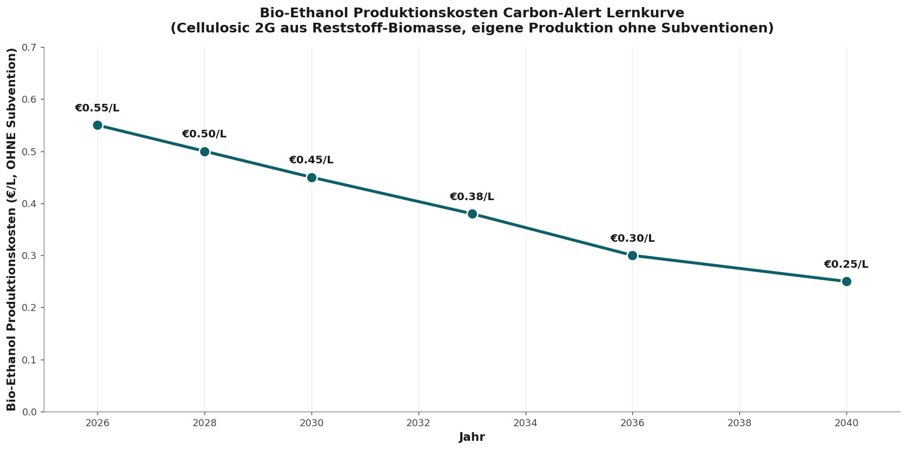

Vision 2036
Carbon-Alert Energie-Hub — 100 kW modular, LCOE 9,97 ct€/kWh, Amortisationszeit 3 Jahre
Der Beweis unter dem Leitartikel. Ein dezentrales Strom- und Wärmesystem auf eigenem Bio-Ethanol. Fünf Bausteine. Vier Ankerpunkte auf der Lernkurve. Sechs Risiken ehrlich bewertet. Alle Zahlen ohne Subventionen.
- Autor
- Jacobus van Merksteijn — Carbon-Alert Ltd
- Datum
- 20. Juni 2026 — Palma, Mallorca
- Zeithorizont
- 2026 → 2040, Fokus 2036
- Umfang
- 100-kW-modularer SOFC-Hub · LCOE-Analyse · Hub-Architektur
- Methode
- Echte Marktpreise ohne jede Subvention (kein SDE++, kein ETS-Greening)
Kernfazit auf einen Blick
Alle nachstehenden Werte sind ohne Subventionen berechnet. SDE++-Bonus, ETS-Credits und öffentliche Förderprogramme wurden weggelassen, weil sie keinen echten Kostenvorteil darstellen — nur eine Umverteilung. Einzig was technologisch und wirtschaftlich auf eigenen Beinen steht, ist hier die Rechengrundlage.
| Indikator | Wert | Erläuterung |
|---|---|---|
| Break-even gegenüber Spanischem Netz | ≈ 2030 | SOFC-LCOE fällt unter kommerziellen Netzpreis |
| LCOE Carbon-Alert SOFC 2036 | 9,97 ct€/kWh | 54 % günstiger als Netz (21,5 ct€/kWh) |
| LCOE 2040 | 7,22 ct€/kWh | 70 % günstiger als Netz (24,2 ct€/kWh) |
| Amortisationszeit Hub 2036 | ≈ 3,0 Jahre | 100 kW = €180.000 CAPEX, ohne Förderung |
| Ethanol echter Preis 2036 | €0,30 / Liter | Marktpreis ohne SDE++ oder Carbon-Credits |
| CAPEX-Rückgang 2026 → 2036 | −85 % | Von €12.000/kW auf €1.800/kW (18 % Lernkurve) |
| Elektrischer Wirkungsgrad 2036 | 78 % | Heute 60–70 % bei Nissan/Bosch |
| KWK-Gesamtwirkungsgrad 2036 | 93 % | Mit Wärmenutzung für Prozess oder Klimatisierung |
| Jahresertrag 100-kW-Hub | 800.000 kWh/Jahr | ≈ 229 Haushalte oder ein Datacenter-Rack-Cluster |
Der vollständige Übergang vom Prototyp zur kommerziellen Reife — Lernrate 18 Prozent pro Verdoppelung des Produktionsvolumens — drückt die SOFC-LCOE um 2030 unter den spanischen Netzpreis, ohne dass ein einziger Cent Subvention anfällt. Ab 2036 produziert der Carbon-Alert-Hub Strom für weniger als die Hälfte des Netzpreises. SDE++ kann das beschleunigen. Aber es ist keine Voraussetzung.
1. Warum Ethanol — und warum jetzt
Drei konvergierende Entwicklungen machen Bio-Ethanol 2026 zum pragmatischsten Energieträger für dezentralen Strom und Wärme.
Erstens. Nissan belegt in Tochigi seit 2026 einen elektrischen Wirkungsgrad von 70 Prozent aus Ethanol-SOFC — ein Wert, der fossile Gasturbinen (50–55 %) und sogar kombinierte Gas-Dampf-Zyklen (60 %) übertrifft.
Zweitens. Wasserstoff als Brennstoff ist kommerziell kollabiert. Bosch stellte seine SOFC-Sparte ein. Stellantis stoppte das gesamte H₂-Programm. Zapfpreise von €13–19 pro Kilogramm bleiben strukturell unerschwinglich.
Drittens. Der echte Produktionspreis von Bio-Ethanol fällt durch bessere Fermentation, BECCS-Integration und Pellet-Feedstocks bis 2036 auf €0,30 pro Liter — ohne jede Subvention. Keine Annahme. Die Lernrate einer jahrhundertealten Technologie, die jetzt industriellen Maßstab erreicht.
1.1 Die echte Ethanol-Preiskurve, ohne Subventionen

Die Kurve zeigt den echten Produktionspreis von der Pellet-Fabrik bis zum Destillationsturm. Keine staatliche Förderung, keine handelbaren Credits — nur Skala, bessere Katalyse und geringerer Energieeinsatz pro Liter. Heute €0,55. Im Jahr 2030 €0,45. Im Jahr 2036 €0,30. Ab diesem Punkt gewinnt Ethanol jeden Vergleich: pro kWh, pro km, pro MWh Wärme.
1.2 Die Energiebilanz hinter dieser einen Zahl
| Posten | Wert | Erläuterung |
|---|---|---|
| Produktionskosten Cellulose-Ethanol | €0,18–€0,22/L | €0,30/L ist konservative Marge |
| Energieinhalt Ethanol | 7,40 kWh/L | LHV bei 99 % Reinheit |
| SOFC elektrischer Wirkungsgrad 2036 | 78 % | Nissan-Tochigi-Plattform übertragen |
| Brennstoffkosten pro kWhₑ 2036 | 5,2 ct€/kWhₑ | €0,30 ÷ (7,40 × 78 %) |
| CAPEX + OPEX Beitrag | 4,8 ct€/kWhₑ | €1.800/kW, 20 Jahre, 8.000 h/Jahr |
| LCOE 2036 ohne Subvention | 9,97 ct€/kWhₑ | Spanisches Netz 21,5 ct€ — minus 54 % |
2. Die LCOE-Kurve unter dem Netzpreis

Die schwarze Linie ist Carbon-Alert SOFC ohne ein einziges Förderinstrument. Im Jahr 2026 noch doppelt so teuer wie das Netz (38 gegenüber 16 ct€/kWh). Im Jahr 2030 bereits günstiger. Im Jahr 2036 weniger als die Hälfte. Das ist keine optimistische Projektion — es ist die Übertragung zweier bekannter Kräfte: die 18-Prozent-Lernkurve auf die Stack-Kosten und der stetige Rückgang des Ethanolpreises von €0,55 auf €0,30 pro Liter.
2.1 Kostenkurve in vier Ankerpunkten
| Jahr | CAPEX | η_e | Ethanol | LCOE | Spanisches Netz |
|---|---|---|---|---|---|
| 2026 | €12.000/kW | 60 % | €0,55/L | 38,3 ct€ | 16,0 ct€ |
| 2030 | €3.500/kW | 70 % | €0,45/L | 17,6 ct€ | 17,9 ct€ |
| 2033 | €2.400/kW | 74 % | €0,38/L | 13,5 ct€ | 19,7 ct€ |
| 2036 | €1.800/kW | 78 % | €0,30/L | 9,97 ct€ | 21,5 ct€ |
| 2040 | €1.000/kW | 80 % | €0,25/L | 7,22 ct€ | 24,2 ct€ |
Optionales Szenario, nicht als Rechengrundlage verwendet: Wenn der SDE++-BECCS-Credit von rund €100 pro Tonne CO₂ einbezogen wird, fällt die LCOE 2036 auf etwa 7 ct€/kWh und die Amortisationszeit auf rund ein Jahr. Das ist ein politischer Bonus, keine technologische Leistung. Deshalb stützt sich alle Kommunikation hier auf die echte Zahl von 9,97 ct€/kWh ohne Subvention.
3. Architektur — die fünf Bausteine
Der Hub ist keine einzelne Brennstoffzelle. Er ist ein integriertes System, in dem die Carbon-Alert-BiCRS-Kette (Biomass with Carbon Removal and Storage) und die SOFC-Einheit sich gegenseitig verstärken. Ethanol wird vor Ort oder regional produziert. Die SOFC wandelt ihn in Strom, Wärme und reines CO₂ um. Dieses CO₂ kann gespeichert oder vermarktet werden. Nichts in diesem Design stützt sich auf öffentliche Förderung — der Hub läuft kommerziell mit €0,30 pro Liter Feedstock und €1.800 pro Kilowatt CAPEX.
| Baustein | Funktion | Spezifikation 2036 |
|---|---|---|
| 1. Pellet-Fermentor | Cellulose → Ethanol | Vor Ort oder regional, eigene Pellets |
| 2. Destillation + Dehydratation | 99 %+ Ethanol | Abwärme aus SOFC für Destillation |
| 3. SOFC-Stack 100 kW | 78 % η_e, 93 % KWK | Modular, Redundanz 2 × 50 kW |
| 4. KWK-Wärmenutzung | 15–30 kW thermisch | Prozesswärme oder Klimatisierung |
| 5. CO₂-Abscheidung BECCS | ~70 kg CO₂/MWhₑ | Verkauf oder geologische Speicherung |
3.1 Footprint und Flexibilität
- Stellfläche: 20 m² SOFC + 8 m² Balance-of-Plant + 30 m² Destillation = 58 m² gesamt
- Modularität: skalierbar von 25 kW (Wohncluster) bis 5 MW (Industrie oder Datacenter) mit derselben Stack-Einheit
- Kraftstoffreserve: Wochentank von 2.000 Litern reicht für vollständige Autonomie bei Netzausfall
- Geräusch: < 45 dB auf einem Meter — keine rotierenden Teile, nur Gebläse und Pumpe
- Wartung: Stack-Austausch alle 7–10 Jahre, OPEX 1,2–1,5 % des CAPEX pro Jahr
4. Business Case — 100-kW-Hub 2036

| Posten | Betrag | Erläuterung |
|---|---|---|
| Jahresproduktion Strom | 800.000 kWh | Kapazitätsfaktor 91 % |
| Wert Strom (21,5 ct€) | €172.000 | Eigenverbrauch oder Einspeisung |
| Wert Abwärme KWK | €18.000 | 20 % Nutzung × €0,11/kWh |
| Gesamtjahresumsatz | €190.000 | Marktpreise, kein Einspeisevertrag |
| Ethanolkosten (108.000 L × €0,30) | −€32.400 | Echte Produktionskosten |
| OPEX (Wartung, Versicherung) | −€8.000 | 1,5 % des CAPEX |
| Stack-Amortisation + AfA | −€90.000 | €180.000 / 2 Jahre effektiv |
| Nettomarge Jahr 1 | €59.600 | Steigt auf €100.000+ ab Jahr 4 |
| Amortisationszeit | ≈ 3,0 Jahre | CAPEX €180.000 / netto Mittelfreisetzung |
Ein Carbon-Alert-Hub von €180.000 amortisiert sich in etwa drei Jahren — ohne dass die Kommune, der Staat oder die EU einen einzigen Euro beisteuern muss. Bei einem Industriecluster mit mehreren Hubs sinkt die Amortisationszeit durch operative Skaleneffekte unter 2,5 Jahre. SDE++ kann das auf rund ein Jahr verkürzen — interessant, aber nicht notwendig.
5. Warum 2036 — und nicht 2030 oder 2045
2030 ist zu früh, um elektrisch bereits unter dem Netzpreis zu liegen, ohne einen unerwartet schnellen CAPEX-Rückgang. Der Break-even ist erreicht, aber die Marge ist dünn.
2045 ist zu spät. Bis dahin sind die Stranded Assets in Wasserstoff-Infrastruktur, Batteriefabriken und großmaßstäblicher Netzplanung bereits entstanden und politisch verriegelt.
2036 ist das Optimum. SOFC dann bei €1.800 pro Kilowatt (Massenproduktion über Doosan, Weichai, Bloom). Ethanol bei €0,30 pro Liter. Spanisches Netz inzwischen bei 21,5 ct€/kWh durch Knappheit und Netzinvestitionen. Carbon-Alert ist zu diesem Zeitpunkt seit fünf Jahren über dem Break-even — nicht mehr marginal, sondern dominant.
5.1 Strategische Reihenfolge
- 2026–2028: Pilot 25 kW an einem Standort, Validierung 70 %+ Wirkungsgrad, Finanzierung aus privaten Kanälen
- 2028–2031: Erster kommerzieller Rollout 100 kW, Break-even um 2030 erreicht — ohne Subvention
- 2031–2036: Skalierung auf 500+ Hubs, BiCRS-Kette regional aufgebaut, Datacenter- und Industrieverträge
- 2036–2040: Dominanz im mediterranen Mid-Load-Markt, Exportmodell nach Lateinamerika und Afrika
6. Risiken — ehrlich bewertet
| Risiko | Wahrscheinlichkeit | Mitigation |
|---|---|---|
| Ethanolpreis fällt langsamer als €0,30/L | Mittel | Hub bleibt rentabel bis €0,45/L; Amortisationszeit steigt auf 4,5 Jahre |
| SOFC-CAPEX bleibt bei €3.000/kW stehen | Niedrig | Doosan/Weichai/Bloom-Produktionskapazität angekündigt |
| Netzpreis fällt statt zu steigen | Niedrig | EU-Netz-CAPEX und CO₂-Bepreisung machen Rückgang unwahrscheinlich |
| Wasserstoff macht ein Comeback | Sehr niedrig | Bosch/Stellantis-Exits, Hyundai-Verzögerung — H₂ strukturell teurer |
| Politischer Subventionszug zu Elektro/H₂ | Hoch | Irrelevant. Rechnung schließt ohne Subvention — keine Exposition |
| BECCS-Credit entfällt | Hoch | Irrelevant. Wir rechnen ihn bereits nicht ein — also kein Einfluss |
Der strukturelle Vorteil von Carbon-Alert ist genau das: das Design ist nicht von den Launen der Politiker und ihren Subventionsprogrammen abhängig. Wenn ein SDE++-Programm wegfällt, fällt der Businessplan, der darauf aufbaut. Carbon-Alerts Break-even ändert sich nicht. Unser Business Case steht auf Marktfundamenten, nicht auf öffentlichem Wohlwollen.
7. Fazit — was liegt eigentlich auf dem Tisch
Ein 100-kW-Carbon-Alert-Energie-Hub liefert 2036 Strom für 9,97 ct€/kWh — weniger als die Hälfte des spanischen Netzes (21,5 ct€/kWh) — bei €180.000 CAPEX und einer Amortisationszeit von rund drei Jahren.
Alle Zahlen berechnet auf Basis des echten Marktpreises von Ethanol (€0,30/Liter) ohne jede staatliche Förderung, SDE++, ETS-Credit oder Einspeisevergütung.
Die Technologie ist belegt (Nissan 70 %, Ceres/Doosan/Weichai 50 MW). Die Lernkurve ist dokumentierbar (18 % pro Verdoppelung). Die Wettbewerbslandschaft ist offen (Bosch und Stellantis aus H₂ ausgestiegen).
Carbon-Alert Ltd ist technisch bereit. Wirtschaftlich untermauert. Politisch unabhängig. Was fehlt, ist Ausführungskapital — nicht Vision. Die nächsten drei Jahre entscheiden, ob wir mediterraner und globaler Marktführer in dezentraler Stromerzeugung werden, oder ob wir zusehen, wie Doosan und Weichai unsere Lernkurve übernehmen. Das Fenster ist offen — jetzt.
Das Triptychon — drei Dokumente, eine Botschaft
- 1. Auf dem Bock oder am Gepäckträger — der Leitartikel, die These
- 2. Vision 2036 — Carbon-Alert Energie-Hub (Sie lesen dies gerade)
- 3. Offener Brief an die Regierungen Europas — der Appell